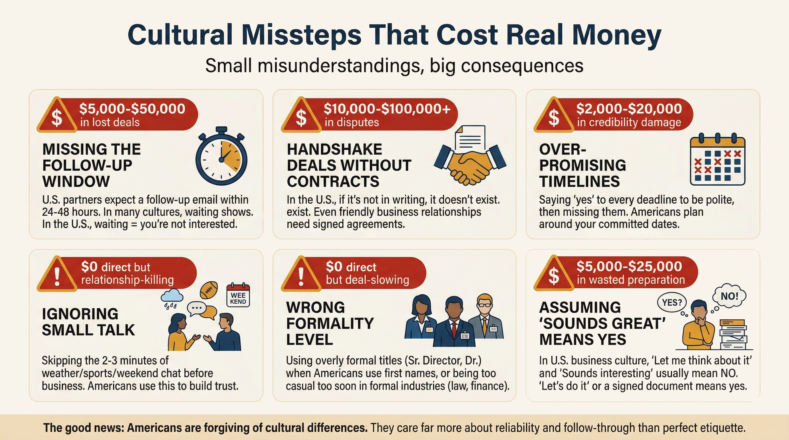

Cultural Missteps That Cost Real Money
Cultural Missteps That Cost Real Money
6 scenes — Media not yet generated
The Undertow You Didn't See Coming
By now you know the beach has strong currents beneath its calm surface. This lesson is about the founders who got pulled under. Small cultural gaps lead to big money losses. An Argentine founder heard "I love your product. We should partner on this" at a Miami trade show. He spent $15,000 on legal fees for a partnership agreement. The American's response: "Oh, I was just saying we should explore it."
Misstep #1: Reading Enthusiasm as Commitment
The surface looks inviting — a warm smile, enthusiastic words, "I love this." But do not dive in until you see written confirmation. "This is fantastic" means "I'm interested enough to keep listening" — not "I'm committing resources." The undercurrent here pulls founders into spending money on verbal promises.
What to do instead: Ask: "What would the next step look like on your end?" If the answer is vague, the deal is exploratory. Don't spend money until you see written commitment : a signed LOI, buy order, or detailed email with agreed terms.
Misstep #2: Gift-Giving in Business Settings
This is a sandbar you do not see coming. A South Korean founder brought high-end electronics to a meeting with a county procurement officer. The officer refused the gift and removed the company from the bidding process.
What to do instead: Skip gifts at first meetings. After deals close, keep gifts under $50 for corporate contacts. Check government gift policies before giving anything to public-sector partners.
Watch Your Money: What Cultural Missteps Actually Cost
Now, consider these real dollar figures from international founders who learned the hard way (as of early 2026):
- $15,000 . Legal fees for a partnership agreement based on a casual "we should partner" comment that was never a commitment
- $8,000–$12,000 . Wasted retainer for a business consultant hired based on a warm introduction that never converted to actual business
- $5,000–$20,000 . Product customization costs for a "verbal commitment" from a U.S. buyer that evaporated when the order wasn't formalized in writing
- $3,000–$7,000 . Flights, hotels, and travel costs for in-person meetings that could have been handled by a 30-minute video call first
- $2,000–$5,000 . Marketing materials and trade show expenses targeting the wrong customer segment because the founder didn't validate market fit locally first
Total avoidable loss for a single founder: $10,000–$50,000+ in the first year. These costs add up fast when every dollar matters.
Did You Know?
Central Florida's Atlantic beaches draw over 10 million visitors a year, and the region's beach culture has shaped local business norms in surprising ways. Meetings over lunch at a waterfront restaurant are common. Dress codes stay relaxed year-round. Business cards get exchanged at surf shops and boardwalk cafes. That casual energy is genuine, but the professionals behind it still expect contracts in writing, deadlines met, and follow-through on every commitment.
More Missteps That Drain Your Budget
Misstep #3: Avoiding Direct "No"
The calm surface again — friendliness is the default in American business, not a commitment. A Japanese founder said "We'll consider it carefully" instead of declining a joint venture. The American team spent six weeks preparing a proposal. When she finally said no, the relationship soured.
What to do instead: "Thank you for thinking of us, but this isn't the right fit right now." Americans respect a clean no — they don't respect a delayed no disguised as maybe.
Misstep #4: Over-Investing Before Validating
What does that mean for you? You have rented the beachfront property before you know where your customers are actually swimming. A Chilean tech startup signed a two-year Orlando office lease ($4,500/month) before having a single U.S. customer. Their clients ended up in Texas and California, and that added up to $81,000 on an office nobody used.
What to do instead: Start lean with coworking or virtual addresses. Validate with actual sales before committing to fixed overhead.
Misstep #5: Rushing the In-Person Trip
Founders spend $3,000-$7,000 per trip for meetings that could be video calls.
What to do instead: Keep your first two or three interactions virtual. Save in-person trips for signing deals or scheduled events.

What Did They Really Mean?
You just had a great 45-minute meeting with a potential U.S. partner. They said: 'This is really exciting. We love what you're building. Let me run this by a few people internally and we'll circle back next week.' It has been 10 days with no follow-up. What is happening?
U.S. Business Phrases — What They Really Mean
"We're excited about this!"
Translation: Americans express enthusiasm easily. This does NOT mean they've decided to buy or partner. Wait for concrete next steps.
"Let me run the numbers"
Translation: I need to check whether we can actually afford this. Expect a slower response — don't push.
"Can you be more specific?"
Translation: Your pitch was too vague. Americans want data, timelines, and concrete deliverables.
"I need to think about it"
Translation: This is often a soft no. Ask: 'What specific concerns can I address?' to keep the conversation going.
"That's not in our budget right now"
Translation: Could mean 'we can't afford it' OR 'convince me it's worth reallocating funds.' Ask about their budget cycle.
"Let's do lunch!"
Translation: Unlike in Latin America, this is often casual — not a formal business commitment. If you want to meet, suggest a specific date.
Click a card to flip it
Latin America Focus — Cultural Bridge Resources
Interestingly, Central Florida offers specific resources to help Latin American founders navigate U.S. business culture:
- Hispanic Chamber of Commerce of Metro Orlando . Networking events that bridge Latin American and U.S. business norms
- Prospera . Mentor matching program that pairs Latin American founders with bilingual U.S. business advisors
- SBDC Orlando . Bilingual business counseling sessions available
- CFITO trade delegations . Structured introductions to U.S. business contacts with cultural context built in
Reflect & Check Your Understanding
Reflection
Review the five missteps covered in this lesson. Which one are you most likely to make? Be honest. Write down a specific situation where you've already made (or nearly made) one of these mistakes. Then write the concrete action you'll take differently next time. The founders who succeed in the U.S. aren't the ones who avoid all mistakes — they're the ones who recognize the patterns before the costs get serious.
What Would You Do?
Question 1 of 3A founder from Colombia meets a U.S. buyer at a conference. The buyer says, "I love your product -- let's definitely partner on this!" The founder is excited and considering hiring a lawyer to draft a partnership agreement. What should the founder do BEFORE spending any money?
American enthusiasm does not equal commitment. Phrases like 'let's partner' often mean 'I'm interested enough to keep talking.' The correct approach is to ask a qualifying question and wait for written confirmation (signed LOI, purchase order, or detailed email with agreed terms) before spending money on legal fees or other deal-related costs.
A Japanese founder is approached by a U.S. company about a joint venture that does not align with her business model. In her culture, saying "no" directly feels impolite. She tells the American team, "We'll consider it carefully." The American team spends six weeks developing a proposal. What is the most likely outcome, and what should she have done instead?
In U.S. business culture, a delayed 'no' disguised as 'maybe' damages trust more than a direct, polite decline. Americans respect clear communication: 'Thank you for thinking of us, but this isn't the right fit for our business right now.' The American team invested six weeks based on perceived interest, and learning it was never real creates significant resentment and reputational damage.
A founder from South Korea is preparing for her first meeting with a county procurement officer in Orlando. She wants to make a strong impression and is considering bringing a high-end gift. Based on what you learned about avoiding cultural friction, what should she do instead?
Gift-giving in U.S. government procurement settings can disqualify a company from the bidding process. The lesson describes a founder who was removed from a bid after bringing high-end electronics to a county officer. The safest strategy is to skip gifts at first meetings entirely, demonstrate professionalism through preparation and follow-up, and check government gift policies before giving anything to public-sector contacts.
Key Takeaway
The key insight is this: cultural slip-ups are costly. The beach looks inviting, but the undertow is real — and it pulls hardest when you feel most comfortable. The founders who avoid the biggest losses are the ones who learned to read the currents before wading in deep. They do not spend money based on praise. They wait for written commitment. They validate before they invest. Apply the phrase-decoding table from this lesson to every U.S. meeting. Evaluate statements carefully, read actions over words, and remember: in U.S. business, friendliness and commitment are two very different things.
What You Need to Know
- Identify the most common cultural missteps international founders make in U.S. business
- Explain how cultural miscommunication affects trust, deals, and partnerships
- Apply specific strategies to avoid cultural friction in U.S. business interactions